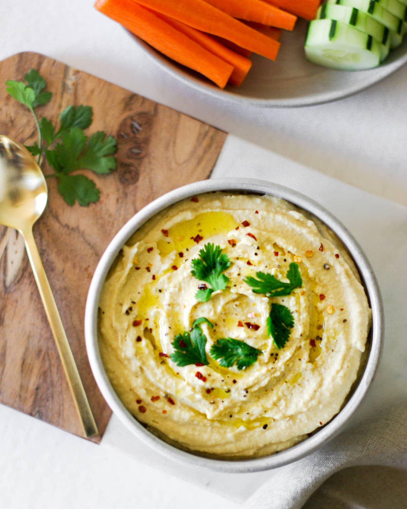

Home
Hummus Recipe

What is Hummus?
Hummus is an Al Al-Moraccan dip made by blending chickpeas with tahini, garlic, and
lemon. Use hummus as a spread on your favorite sandwiches/pita wraps, use it as a dip
for your favorite vegetables or crackers. You can even use it as a base for your favorite meals.
Ingredients
- Chickpeas
- Garlic
- Tahini
- Fresh Lemon Juice
- Sea Salt
- Extra Virgin Olive Oil
- Sumac or ground cumin for garnish
Steps
- Soak and Cook Chickpeas:
Place 1 cup dried chickpeas in a large bowl and cover
with plenty of water (the beans will expand.) Soak overnight. When ready, drain the chickpeas
and place them in a medium-sized heavy cooking pot. Cover with water by about 2 inches. Bring
to a boil, then reduce heat and simmer for 1 1/2 to 2 hours. You should end up with about 3 cups
of cooked chickpeas.
- Peel the chickpeas:
Cover the cooked chickpeas in hot water and add 1 1/2 teaspoons baking soda. Leave for a few minutes.
Take a handful of chickpeas and rub them under running water to remove the skins. Discard skins. Let
the chickpeas cool completely before using. Reserve 1 to 2 tablespoons of chickpeas to garnish the
finished hummus later.
- Puree the chickpeas:
Dry the chickpeas well then add them to the bowl of a large food processor fitted with the S-blade. Run
the processor until the chickpeas turn into a smooth powder-like paste.
- Finish the hummus:
While the food processor is running, add 2 ice cubes, tahini, salt, and lemon juice. Blend for about 4 to 5
minutes. Check, and if the consistency is too thick, run the processor and slowly add a little water. Blend
until you reach the desired silky-smooth consistency. At this point, you can cover and refrigerate the hummus
for an hour or so before serving.
- Transfer to a serving bowl and garnish:
Spread the hummus in a serving bowl and add a generous drizzle of good extra virgin olive oil. Add the reserved
chickpeas to the middle, if you’d like. Sprinkle sumac on top. Enjoy with warm pita wedges, your favorite veggies,
and some warm pita bread.